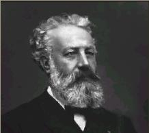
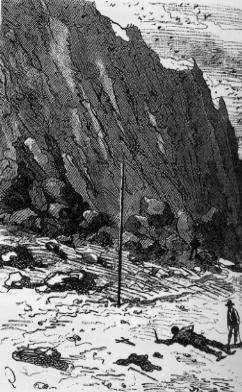
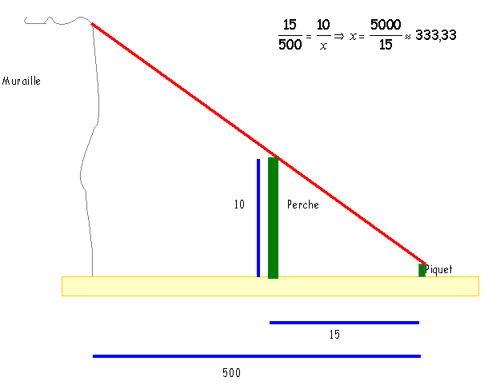

Les mathématiques de Jules Verne
Après de multiples aventures, alors que la guerre de Sécession déchire les Etats-Unis, l'ingénieur Cyrus Smith, le journaliste Gédéon Spilett, le marin Pencroff, l'esclave affranchi Nab et le jeune Harbert se retrouvent "naufragés des airs" sur une île déserte... (L'Île mystérieuse (1874) - Jules Verne).
Le lendemain, 16 avril, Dimanche de Pâques, les colons sortaient des Cheminées au jour naissant, et procédaient au lavage de leur linge et au nettoyage de leurs vêtements. L'ingénieur comptait fabriquer du savon dès qu'il se serait procuré les matières premières nécessaires à la saponification, soude ou potasse, graisse ou huile. La question si importante du renouvellement de la garde-robe sera également traitée en temps et lieu. En tout cas, les habits dureraient bien six mois encore, car ils étaient solides et pouvaient résister aux fatigues des travaux manuels. Mais tout dépendrait de la situation de l'île par rapport aux terres habitées. C'est ce qui serait déterminé ce jour même, si le jour le permettait.
Or, le soleil se levant sur un horizon pur, annonçait une journée magnifique, une de ces belles journées d'automne qui sont comme les derniers adieux de la terre chaude.
Il s'agissait donc de compléter les éléments des observations de la veille, en mesurant la hauteur du plateau de Grande-Vue au-dessus du niveau de la mer.
" Ne vous faut-il pas un instrument analogue à celui qui vous a servi hier ? demanda Harbert à l'ingénieur.
- Non, mon enfant, répondit celui-ci, nous allons procéder autrement et d'une manière à peu près aussi précise. "
Harbert, aimant à s'instruire de toutes choses, suivit l'ingénieur, qui s'écarta du pied de la muraille de granit, en descendant jusqu'au bord de la grève. Pendant ce temps, Pencroff, Nab et le reporter s'occupaient de divers travaux.
Cyrus Smith s'était muni d'une sorte de perche droite, longue d'une douzaine de pieds, qu'il avait mesurée aussi exactement que possible, en le comparant à sa propre taille, dont il connaissait la hauteur à une ligne près. Harbert portait un fil de plomb que lui avait remis Cyrus Smith, c'est-à-dire une simple pierre fixée au bout d'une fibre flexible.
Arrivé à une vingtaine de pieds de la lisière de la grève, et à cinq cents pieds environ de la muraille de granit, qui se dressait perpendiculairement, Cyrus Smith enfonça la perche de deux pieds dans le sable, et en la calant avec soin, il parvint, au moyen du fil à plomb, à la dresser perpendiculairement au plan de l'horizon.
Cela fait, il se recula de la distance nécessaire pour que, étant couché sur le sable, le rayon visuel, parti de son oeil, effleurât à la fois et l'extrémité de la perche et la crête de la muraille. Puis il marque soigneusement ce point avec un piquet. Alors, s''adressant à Harbert :
- Tu connais les premiers principes de la géométrie ? lui demanda-t-il.
- Un peu, monsieur Cyrus, répondit Harbert, qui ne voulait pas trop s'avancer.
- Tu te rappelles bien quelles sont les propriétés de deux triangles semblables ?
- Oui, répondit Harbert. Leurs côtés homologues sont proportionnels.
- Eh bien, mon enfant, je viens de construire deux triangles semblables, tous deux rectangles : le premier le plus petit, a pour côtés la perche perpendiculaire, la distance qui sépare le piquet du bas de la perche, et mon rayon visuel pour hypoténuse ; le second a pour côtés la muraille perpendiculaire, dont il s'agit de mesurer la hauteur, la distance qui sépare le piquet du bas de cette muraille, et mon rayon visuel formant également son hypoténuse qui se trouve être la prolongation de celle du premier triangle.
- Ah ! Monsieur Cyrus, j'ai compris ! s'écria Harbert. De même que la distance du piquet à la perche est proportionnelle à la distance du piquet à la base de la muraille, de même la hauteur de la perche est proportionnelle à la hauteur de cette muraille.
- C'est cela même, Harbert, répondit l'ingénieur, et quand nous aurons mesuré les deux premières distances, connaissant la hauteur de la perche, nous n'aurons plus qu'un calcul de proportions à faire, ce qui nous donnera la hauteur de la muraille et nous évitera de la mesurer directement. "
Les deux distances horizontales furent relevées, au moyen même de la perche, dont la longueur au-dessus du sable était exactement de dix pieds. La première distance était de quinze pieds entre le piquet et le point où la perche était enfoncée dans le sable. La deuxième distance, entre le piquet et la base de la muraille, était de cinq cent pieds. Ces mesures terminées, Cyrus Smith et le jeune garçon revinrent aux Cheminées.
Là, l'ingénieur prit une pierre plate qu'il avait rapportée de ses précédentes excursions, sorte de schiste ardoisier, sur lequel il était facile de tracer des chiffres au moyen d'une coquille aiguë. Il établit dont la proportion suivante :
15 :500 : :10 :x
x=5000/15=333,33
D''où il fut établi que la muraille mesurait trois cent trente trois pieds de hauteur (il s'agit du pied anglais qui vaut 30 centimètres).
Voici un petit dessin pour résumer le raisonnement de Cyrus Smith. Vous pouvez ensuite étudier le théorème de Thalès.
